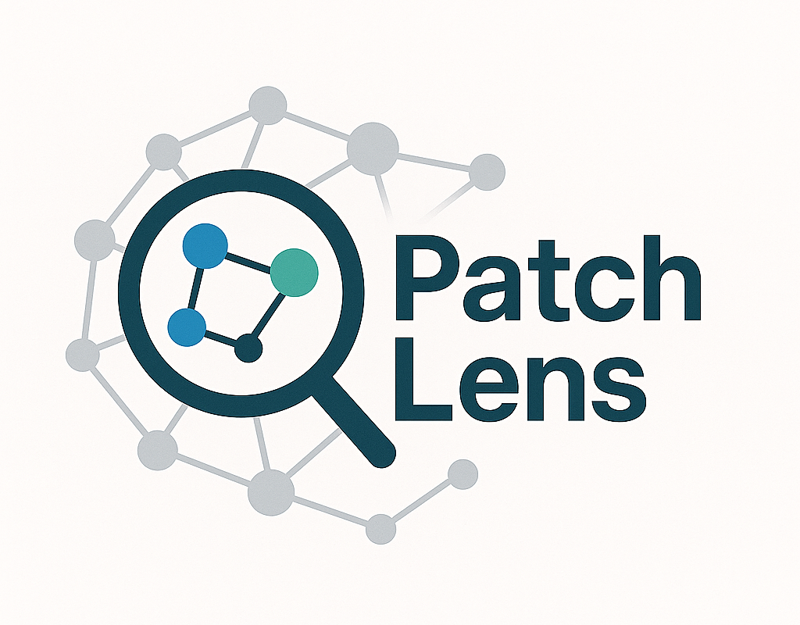
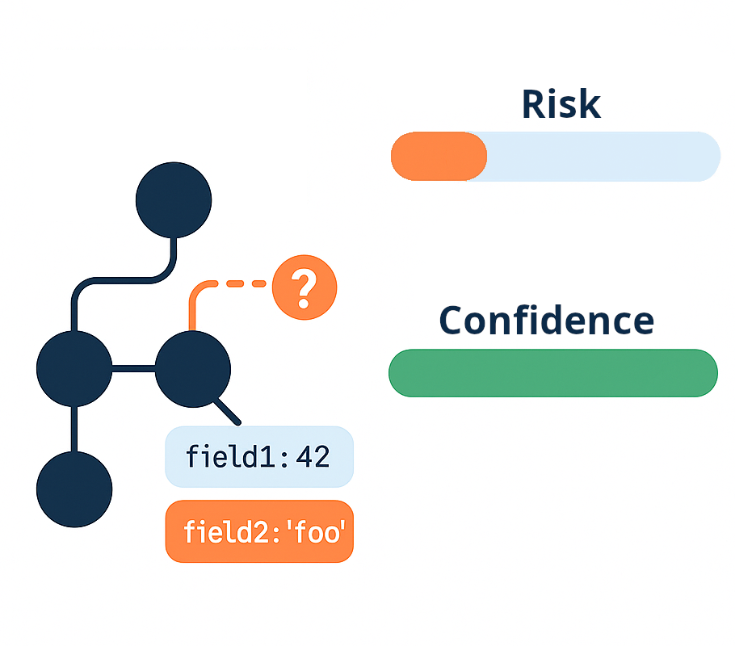

Dependency updates can hide far-reaching effects: a tiny tweak in a library API or data field can ripple through your codebase. PatchLens stops those surprises by chaining together static call-graph analysis, field-state inspection, and AI-powered test expansions to build a safety net around every Go module bump. It pinpoints exactly which functions, data fields, and behaviors have shifted. PatchLens presents this in easy to understand charts so that you know what can be merged effortlessly and what needs attention.
Catch subtle behavior changes early.
Identify suspicious 0-day behavior changes in dependencies.
Field-level insights identify exactly "what" and "where" behaviors changed.
Automatically vet dependency updates to stay ahead of vulnerabilities.
Seamlessly integrates with your existing dependency update pull request workflow.
Understand risk and confidence levels at a glance, backed by detailed insights.

Reduce uncertainty and ship with confidence. PatchLens ensures every dependency update is fully analyzed for functionality and security, rigorously tested, and clearly understood before it reaches production.
Try PatchLens free using our GitHub Action or CLI.